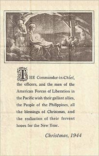

|
j
a v a s c r i p t |
Pg.2/2
December 25, 1944
Rather than preach to them, I used to hold back and say, "I'll gamble." Today I'm saying, "I gambled and lost, so why rub it in?" But they can't help themselves. I've drawn the line: people are dying to redeem us. Are we worthy or not? So, without transportation, business is completely paralyzed. Beginning tomorrow, food from the provinces cannot enter Manila anymore. Our only hope is that the Americans arrive before the city starves. Last night, an American plane dropped Christmas Cards all over the city, managing to land at least one in every home nearby. We got two, the Sotelos got two, and the Ayesas found four in their yard. The card has a picture of the Child Jesus in the Manger with Joseph, Mary and a few lambs: The COMMANDER-IN-CHIEF, the officers, and the men of the American Forces of Liberation in the Pacific wish their gallant allies, the People of the Philippines, all the blessings of Christmas, and the realization of their fervent hopes for the New Year. CHRISTMAS, 1944.

Everyone was tickled pink by the cards, cooing at the picture and all. The Japanese didn't wise up to it until 0700 this morning — too late by then — but they were still ordered to pick them up from the street. News roundup: Leyte: The Americans are heading for the last Japanese port in the western end of Leyte, Palompon. In the last nine days, the Japanese lost 19,000 — dead. Mindoro: MacArthur's communiqués no longer talk about ground fighting. Manila Area: After the devastating raid on Clark (KGEX still persists in placing Clark Field in the Manila area) the Americans blasted an airdrome in Balintawak, northeast of Manila. Nightly visits by solitary B-24s over Manila continue — 5 to 10 heavy bombs last night and today too. You hear a drone for a while then it's gone. When you're sure it has left ... BOOMMFFF ... the whole city shakes. These have been the heaviest bombs dropped so far. |
|
|
|
|